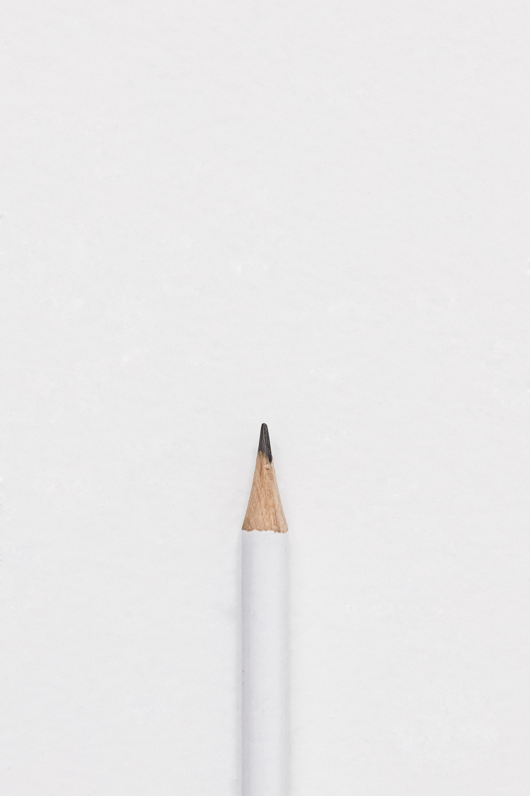

새로운 시작

우선 시작 전에 큰 각오를해야 합니다. 정말 많은것을 버리고 포기해야됩니다. 자기 자신한테 어려운
질문들을 던지고 대답하면서 성장해 나가야합니다. 자 그럼 자신과의 싸움을 시작해볼까요?
- 미니멀리즘을 시작하고 무엇을 얻고 싶습니까? 예를 들어 금전적 자유를 얻고 싶습니까? 아니면
더 행복하고 덜 스트레스 받는 생활을 하고 싶습니까? 그것이 무엇이든간에 적으싶쇼. 적고 매일 매번
미니멀리즘을 실천할때 그 목표를 생각하는 것입니다.
- 자기가 한테 가장 소중한 물건들을 10개 적어보세요. 자 다 적으셨으면 무인도에서 꼭 필요한
자기 물건 10개를 적어보세요. 아마 둘다 비슷할 것입니다.
- 이 물건들을 한 자리에 모아서 한 곳에 모여놓고 청소를 시작합니다.
- 청소 하시다가 보면 정말 오랜기간 사용 안한 물건들이 분명히 있을것입니다. 그 물건들을 보면서
진짜 필요한지 자신한테 냉정하게 질문을 해보시고 그 물건을 과감하게 버리시거나 기부를 하세요.
- 옷장을 청소하실때 자기가 꼭 필요하고 자주 입는 옷들을 골라서 정리를 하세요. 남은 옷들
잘 안입는 옷들은 다 다른곳에 두거나 아니면 기부하세요. 절대 이 옷들이 아깝다고 망설히 버리실
필요가 없습니다. 그런 옷들을 곁에 가지고 있었봤자 어떤 옷을 입을지에 대한 망설힘 그리고 자신이
새로운 옷이 필요하다는 착각을 더 하게할 악마같은 물건들입니다. 제거하세요.
- 자 이제 청소가 다 완료 되셨다면 이 공간을 유지할 수 있게 매일 매일 신경쓰싶쇼. 에를 들어
매일 집에 오자마자 옷 부터 정리하고 옷장에 넣으싶쇼. 그리고 휴대폰, 지갑, 열쇠 이런 물건들을
항상 똑같은 곳에 놓는 습관을 기르싶쇼. 모든 것을 처음이었을때의 상태를 유지할려고 노력하세요.
우선 여기가 까지만 합니다. 이것을 다 하고 유지하는 것에 신경을 쓰싶쇼. 그리고 일주일 뒤에 열심히
유지하신 후에 다시 찾아주세요. 여러분 잊지마세요. 유지를 못하셨다면 아직 다음 단계를 배울 준비가
안되셨습니다.